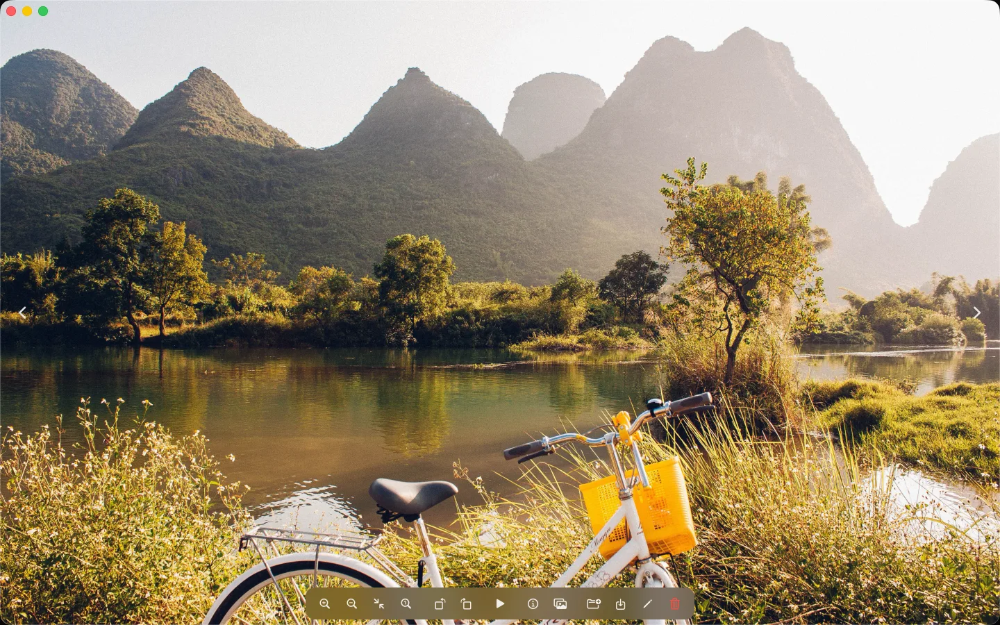
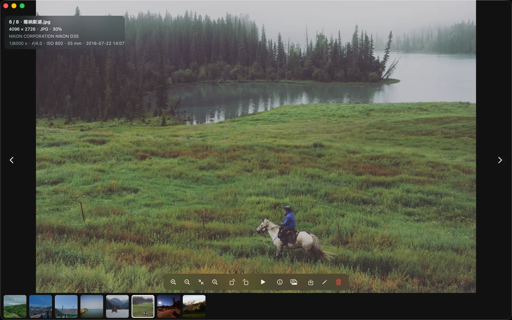
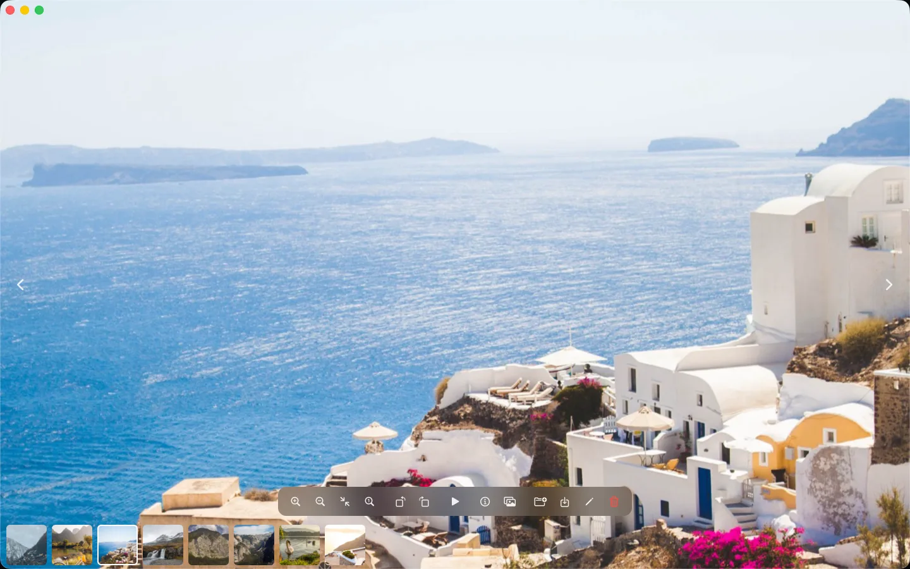
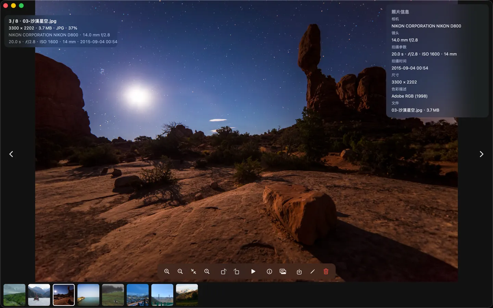
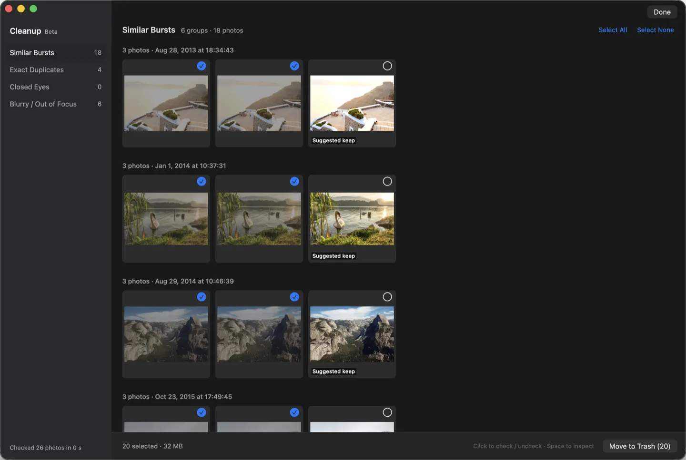
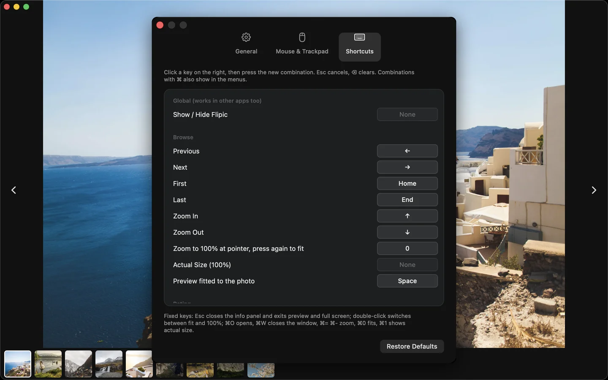
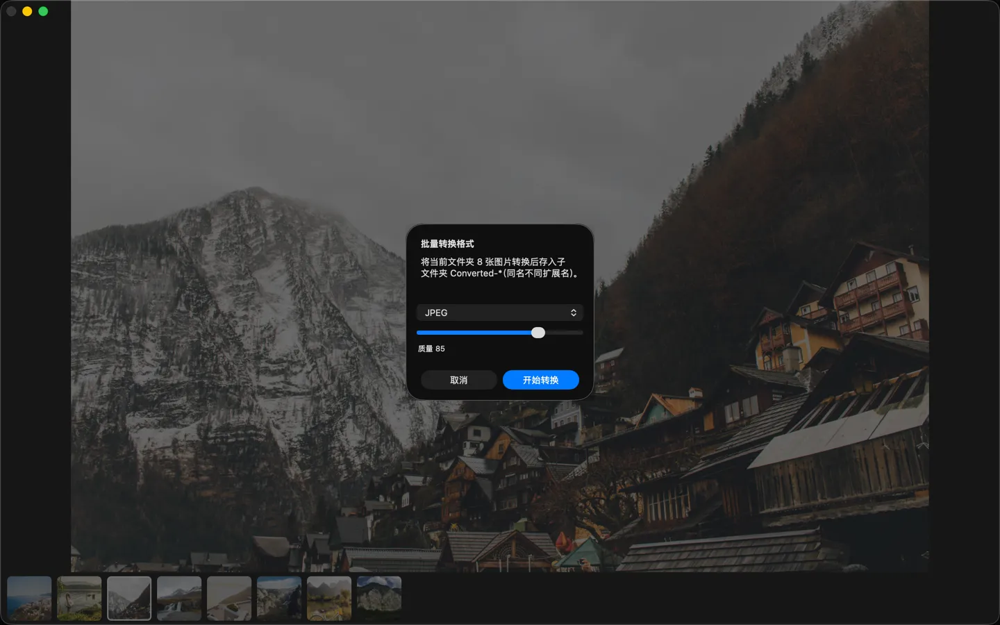

Image viewer for Mac
Double-click a photo. Arrow keys through the whole folder.
Flipic does one thing: viewing images. Open a photo, flip to the next one, zoom in for detail. It works the way image viewers on Windows always have.
- macOS 13 or later
- Apple silicon and Intel
- 1.8 MB download
- Notarized by Apple

Next image, one key away
Open a single image in Preview and that is all you get. To flip through, you have to go back to Finder and select the whole set first.
In Flipic, double-click any image and press → for the next one. Press Space and the window wraps to the photo’s aspect ratio, just like Quick Look in Finder; press it again to return. Sort by name, date taken, date modified, date created or file size. Nearby images are prepared in the background, so even 48-megapixel photos keep up.

Zoom that follows your fingers
Rest the pointer on a detail and press 0 to zoom to 100% right there; press it again to go back. Pinch on the trackpad and the image scales right under your fingers. Double-click to toggle between fit and 100%; the full-resolution original loads only when you zoom in far enough to need it. Prefer the scroll wheel for paging? Switch it in Settings (⌘,), where you can also reverse the zoom direction.

Just the photo, EXIF on demand
Nothing but the photo by default. Press I for camera, lens, shutter, aperture, ISO, date taken, size and color profile; Esc closes it.

Cull an event shoot in minutes
Press ⇧⌘K for Cleanup Mode (Beta). Flipic checks the folder on your Mac and sorts out similar bursts, exact duplicates, closed eyes and blurry shots. The best frame of each burst is suggested as a keeper; the rest are checked for you. Nothing is deleted until you press Move to Trash, and ⌘Z brings it back. RAW+JPG pairs are handled together.

Star ratings, your own shortcuts
Press 1 to 5 to rate a photo; rated photos keep their stars at the bottom center, and the right-click menu clears them. Ratings are standard XMP, so Lightroom, Bridge and Capture One read them: metadata only for JPEG and HEIC, a same-name .xmp sidecar for proprietary RAW.
Every setting lives in one window (⌘,) and every shortcut can be changed. Record a global shortcut to bring Flipic forward from Photoshop and hide it again, and make Flipic your default viewer with one click.

Batch convert HEIC to JPG
Convert a whole folder to JPEG, PNG or HEIC in one go (⇧⌘C). Converted files go into a subfolder; your originals stay untouched.

- Formats
- JPEG, PNG, HEIC, WebP, animated GIF, TIFF, AVIF, JPEG XL (macOS 14 or later) and common camera RAW formats
- Also
- HDR display for HDR photos (turn on in Settings), adjustable slideshow crossfade, 1–5 star ratings (XMP, readable by Lightroom), a global show / hide shortcut, customizable shortcuts; ⌘E hands the current photo to Photoshop, Lightroom or any editor you choose (the RAW, if one has the same name); rotate and save (lossless for JPEG and HEIC), export compressed copies, batch rename, slideshow with 1 to 10 seconds per photo, set as wallpaper, 14 interface languages
- Privacy
- No network access by default, no account, no data collection. Flipic only reads the images you open. Update checks happen only when you ask or turn them on, and fetch just a version number.
- Open source
- MIT licensed. The code is on GitHub; read it or build it yourself.